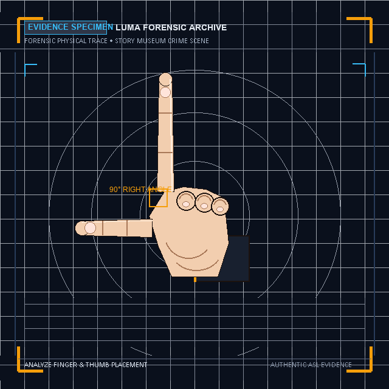
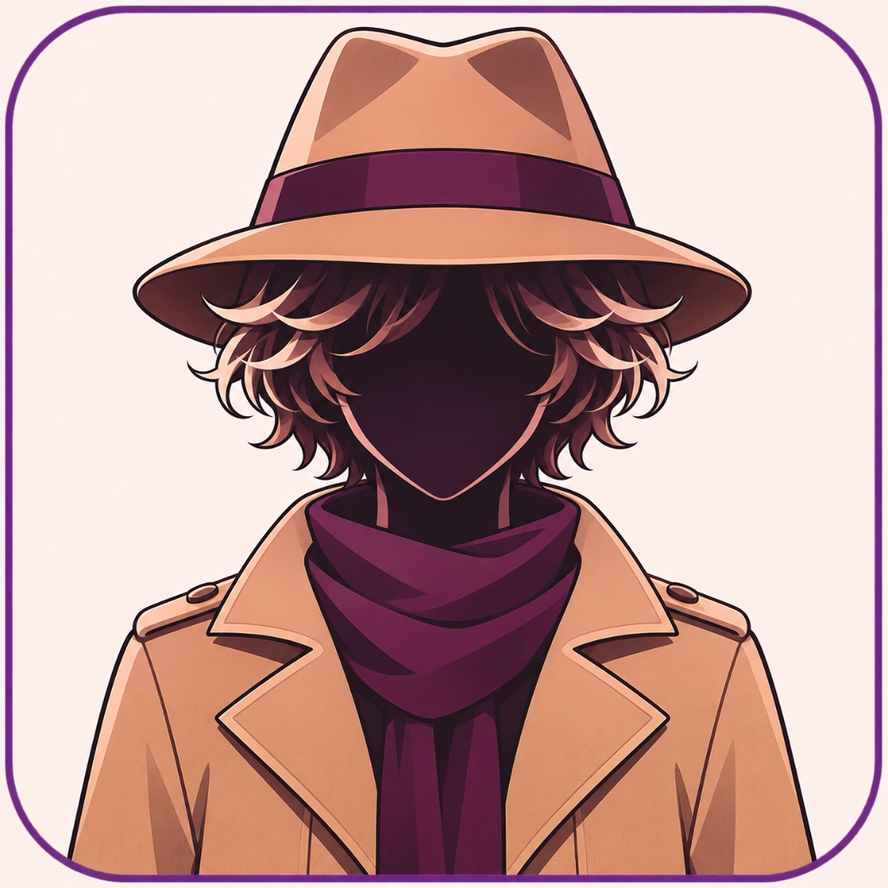
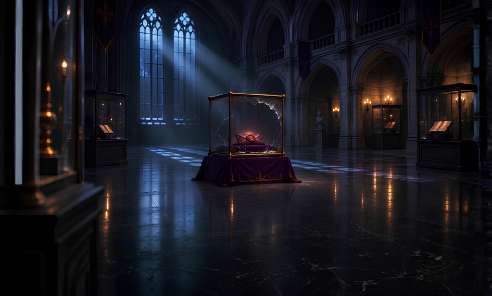
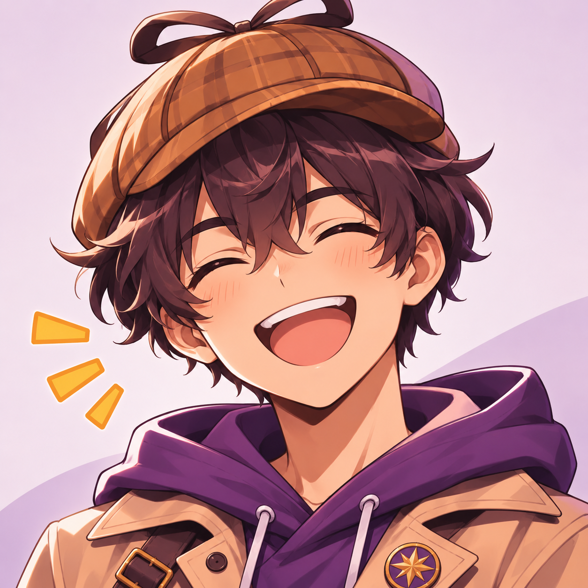
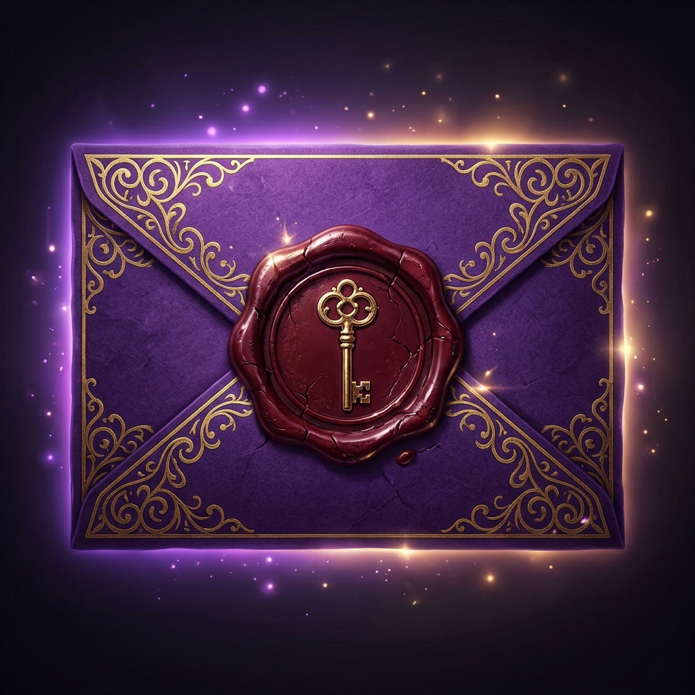
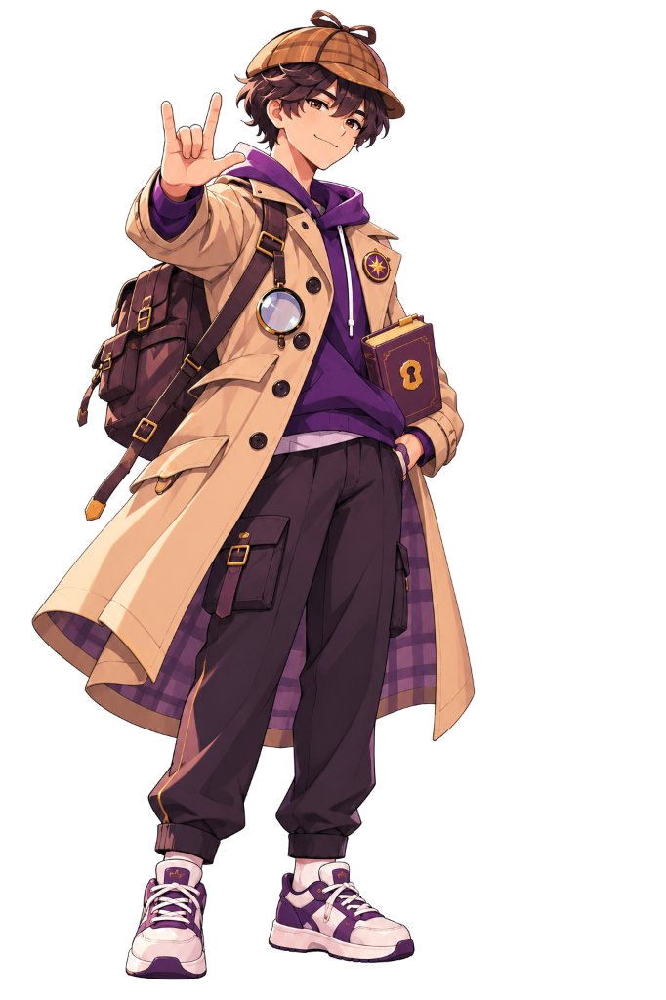
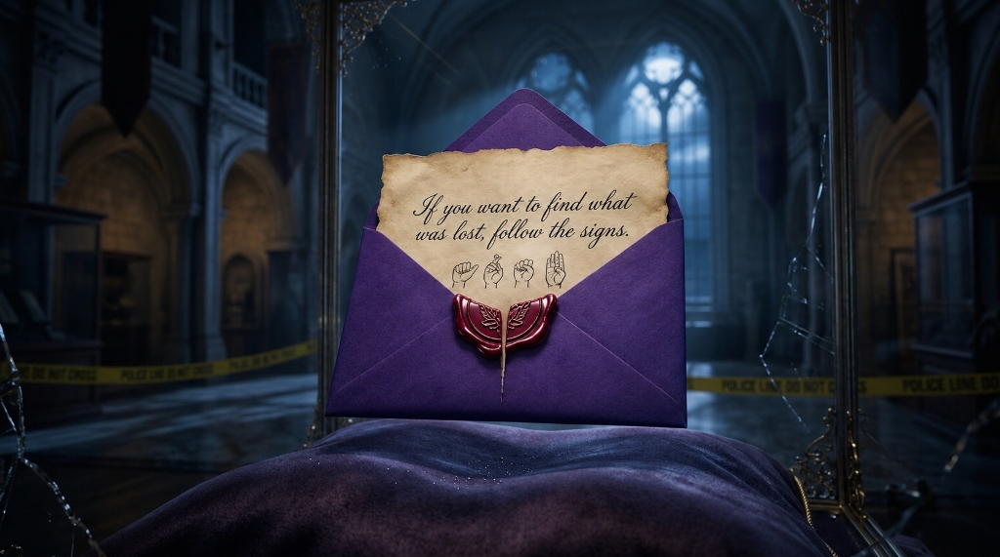

Master static handshapes, manual alphabet (A–Z), numbers (1–100), and immediate survival vocabulary to investigate the vanished Memory Book in Luma City.
CASE #1
THE WAX SEAL CIPHER
STORY MUSEUM • STAGE 1 OF 10
⏱️45s
🔍EVIDENCE CLUE #1 OF 4FORENSIC SPECIMEN

INVESTIGATION QUESTION
Question 1 of 4

Analyzing...
GIO (PARTNER)
"Look closely at this mystery handshape stamped on the evidence. Which letter does it represent?"
SELECT MATCHING DEDUCTION:TOUCH OR CLICK TO SOLVE
Observe finger positions and thumb placement to deduce the letter.
💡 Gio's Hint:The index finger points straight up while the thumb forms a 90-degree right angle.
● LEVEL 1• BEGINNER ASL FORENSIC DECODER
REWARD: +150 XP

🎉
CASE SOLVED
The Wax Seal Cipher
Forensic physical evidence verified and decoded!
⭐⭐⭐
XP REWARD+150 XP
EVIDENCE DISCOVEREDThe Purple Wax Envelope
📜ARCHIVED EVIDENCE RECORD
The wax seal reveals the word LUMA, the sacred name of the city and festival.
📍NEXT INVESTIGATION TRAIL
Story Museum • Sacred Vitrine

"Gio unseals the purple envelope! The note inside reveals: 'The heart of Luma was taken from its glass prison. Seek the vitrine with four locked tumblers.' Let's examine the crime scene vitrine lock!"
🏛️
🏛️ 3D LUMA CITY INVESTIGATION
LEVEL 3 FINALE
Realistic 3D Scenario • Festival & Story Museum • 10 Witnesses & Suspects
ALIBIS LOGGED:0 / 10
📍 NEAREST SUSPECT: PROF. ELIAS CARTER (18m North)
⏳EVALUATION:02:00
WASD: Walk
•[E]: Interview / Spin Wheel•[F]: Fireworks•[G]: Dance•[M]: Music
Festival Central Piazza
GESTIGO • CASE #001
The Festival of Stories
Story Museum • Luma City
GESTIGO
✦ PROLOGUE: THE FESTIVAL OF STORIES

⛶Enlarge
🔍⛶
🔍CLUE #1: WAX-SEALED PURPLE ENVELOPE

Gio
DETECTIVE-IN-TRAINING
1 / 8
Welcome to Luma City! Tonight is the opening of the grand Festival of Stories, where everyone in the city gathers to celebrate legendary tales told in sign language. But without the sacred Memory Book to open the ceremony, the entire festival cannot begin!
🔍
EVIDENCE INSPECTION
High-Resolution Clue Archive

Inspect the ancient message and sign language handshape clues.